分类

一些经验
核心问题：
- 全域放量 再前半个小时 跑来的 流量 是非常精准的（抖音阿苏）（豆包）说 放量 会先跑A3，再跑A2A1A0，两相印证由此 我推断 一键起量 和 基础 放量 应该 都是这么个逻辑

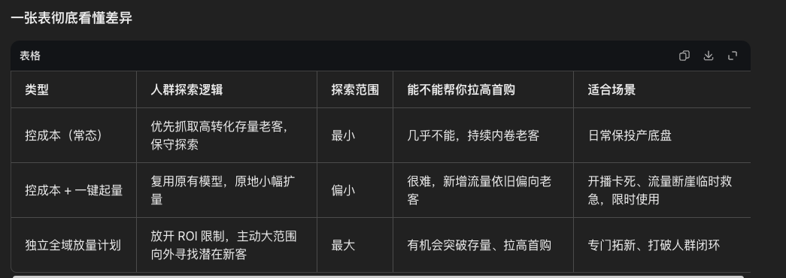


- 不要追投瞬烧追投的标签不准（平时的体感），ROI打不正追投流量渠道 有问题，不如主计划流量渠道精准
为什么：阿苏 在另一个视频说 通过主计划 去瞬烧的 流量 是非常精准的
瞬烧 用全域 放量 和 一键起量 都可以，基础放量是全程，一键起量 是打瞬烧节点，塑品阶段打进来，一波一波！
瞬烧后，为了保证后续 转化平稳，都是要用 加热 补A3人群的，因为放量会 瞬间吃掉一部分 A3高转化人群！
七巷说 追投可以种草：阶段1 稳定收割 --追投达人种草拉新3 天--关掉追投-只开基础
阶段2：破层级 打流速：前面1个小时--追投成交 3批达人（消耗3000）出高价--直播间要接得住
还说过：自然流量--前1个小时的 成交密度---决定整场的 成交密度，其次还说千次 ：人货场 流量精准度，也就是成交密度
羽川说：千次GPM决定实时流速！逻辑：有曝光 就有点击 就有成交 就有千次，曝光=讲解时长*次数*实时流速
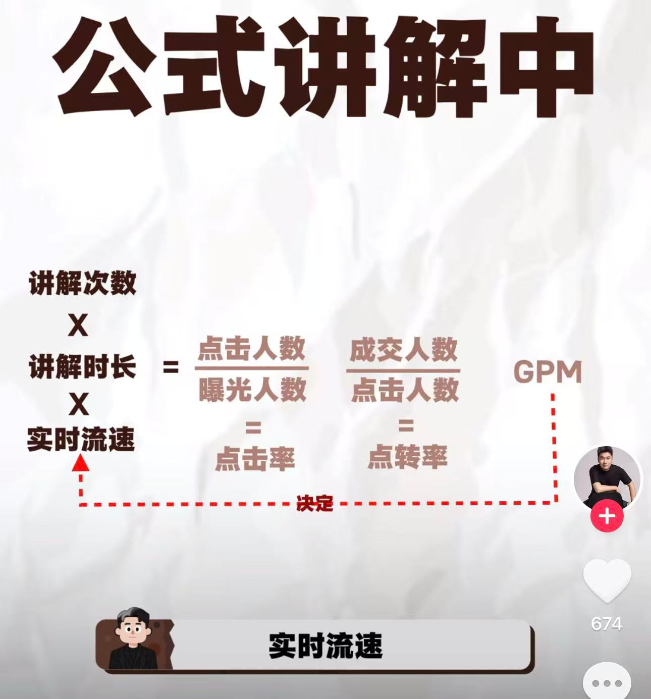
🔴 全域后期冲量与稳定ROI = 基础自然流起来后，在“稳定收割”和“破层级冲量”之间选路
追投打瞬烧也是 放量 半小时
瞬烧逻辑：短时间内的 付费抢量---必须能控制时间，所以【主计划 放量，一键起量 追投放量 追投控本（亲自试验）】都可以瞬烧
短时间付费买量（放量 时长 预算）--承接住---校准自然流模型--自然流优先召回刚刚瞬烧的A3--再推荐更新后的类似人群
千展一高自然流就被付费计划摁住？什么逻辑呢：当高价值泛人群供给不足，系统优先分配【付费可竞价买到的存量精准流量】，减少免费泛流量探索测试
小天说：全域投的好，起消耗，投产高！逻辑：想要投好全域 账号做增量：蓄水--才会爆发 动作：积攒曝光 积攒人群 积攒浏览临界值转化才会越来越硬，层级才会破，做好转化，全域进来多少 卖多少 ！（1）第一个小时播的过程当中，配合加热画面加热第一小时全域 70块，加热50块2500次曝光 7% 210个10-15单人；前置曝光；前半个小时40分钟，以全域二次触达的形式 曝光你的直播间；你的转化一下硬起来了；
经验总结：追投 品广 前置曝光的加热人群 在当场直播 40分钟后或某个节点，或者下一场 ，全域会再次召回高意向人群
双木东说：一键起量的 流量是根据 全域流量来分配的，有可能跑到其它流量，300一小时测一下，消耗的 前几十块如果 其它占比高，马上停，再换
双木东说：1：追投投产肯定不会比主计划高，2：打追投还不如降低主计划roi，跑快点 3：我听出来 视频是可以撬动自然流的，但是放量比控本更容易撬动自然流，能吃到订单 转化率可以，就加预算
曹操说：撬动自然流一上来用画面，推荐流量 需要稳定的模型和数据反馈，画面就可以！先不用短视频，因为短视频受干扰因素太多：竞争、素材衰弱
双木东说：流量断崖下降，有3个原因：1：违规 2：数据递减，面板数据不够 3：同行开播 买量，需要瞬烧 补量 抢优质流量：一键起量（大预算 短时长）或 追投（大预算 短时长或 三倍出价），前提是在 烧的时候 把 停留 成交做出来！成交率和千次做出来，竞争力变强 拿到更高质流量！
素材 · 画面vs视频
直播画面 vs 素材
核心问题：主投画面还是视频？
- 低毛利·多品 → 主投画面、占80%以上利润低靠自然流放大
- 高毛利·单品 → 主投视频、占70%以上靠视频筛精准流量
- 素材两套都要(种草+收割)只有硬广薅完掉量；只有种草被同行收割
- 别看投产低就删素材坑删了冲锋的→收割的没流量→计划崩
为什么：全域要"种草归种草、收割归收割"；每条素材角色不同，删了冲锋种草的，后方收割的就没人送流量。
新增 · 分类
总结
核心问题：点这里改问题
- 一键控量 和 场中roi 调整：提前3-5分钟原因（点这里改）
- 主计划跑飞--一键控量原因（点这里改）
- 追投跑飞追投跑飞-调预算-及时止血 追投跑飞-调出价-延时不确定 追投-出价-拿量的）
- 各建独立计划。永远不要在原计划上改达人。 就这一句，记死缩略适宽原图
- 自然流逻辑 ：付费-喂精准人群-喂订单打模型--模型越准--承接住测试自然流（转化率越高，GPM流量利用率越高）--自然流越准（付费与自然流公用一套推流模型）


- ecpm 与 GPm原因（点这里改）ecpm针对付费 拿量排位，GPM针对自然流，流量利用效率
为什么：点这里补充逻辑。
分类
公式
- GMV=曝光*进入率*GPM/1000=时长* 每小时曝光 * 进入率 * GPM/1000
- GPM曝光 = GMV/曝光 × 1000=GPM观看 × 进入率= 进入率 × 观看转化率 × 客单价 × 1000
- GPM观看= GMV/场观uv x1000 = 观看转化率 × 客单价 × 1000= = UV（价值） x1000 =OPM x 客单价
- CPM=(消耗 ÷ 曝光) × 1000
- ROI =GMV / 消耗= GPM曝光 / CPM = (GPM观看 × 进入率) / CPM
曝光人数=讲解次数 * 讲解时长 * 实时流速
订单密度OPM= 订单量/场观UVx1000 = 转化率x1000 = GPM/客单价 --每千份流量能产出多少订单
GPM= OPM x 客单价
新号 · 投流方式
控成本 vs 放量
核心问题：新号先用哪个？
- ✅ 控成本(新号前期)：守住投产，收割高意向！人群相对更准，流速更稳，卡死成本、质量可控，逻辑：遇到合适流量 快速消耗一波，1：场景1：【窄 高 慢】受众窄，客单高，转化慢，优先控本
- 优化目标选「进成交ROI」过滤秒退单、人群质量更好
- ⏳ 放量：拓人群，拉新客！开口拉新，拿量为主，人群更宽，流速更快，适合补流速，起量快但质量不可控、易引泛流量，逻辑：系统有出价，出到你能稳定跑量，不再往上出，为了满足最多转化数，持续消耗1：场景1：【宽 低 快】受众宽，客单低，转化快，复购高，优先放量2：场景2：新号冷启动3：自然流账号 破层级4：全域控本场中 掉量，掉消耗=放量1小时￥300+加热行业A3人群
- 放量适合"全域数据稳定之后"再放大
- 如果品类卡中间，要放量和控本 一起搭配 使用（中高端女装 运动户外 数码配件）


为什么：新号先控成本求稳→数据稳了再切放量放大。顺序反了，标签先被泛流量带歪。
投流课程 · 树状图 2.0
客单价 & 件单价
在哪看
1店铺-罗盘-人群-用户偏好

2客单价：店铺-罗盘-直播详情-商品


3巨量百应-数据-直播诊断

4店铺罗盘-人群-人群洞察

分类
控本 vs 放量 vs 一键放量
控成本：优先抓取高转化存量老客，保守探索
放量：放开ROI 限制，主动大范围 向外寻找潜在新客
一键起量：复用原有模型，原地小幅扩量
为什么：
投流课程 · 树状图 2.0
TGI在哪看
TGI就是看哪类人最爱买你的东西！！！
TGI =（潜在用户里有这个特征的比例 ÷ 你老客户里有这个特征的比例）× 100TGI官方解释

1店铺-罗盘-直播详情-购买偏好

2巨量百应-数据-人群分析

投流课程 · 树状图 2.0
付费流量占比 & 付费成交占比
tjuyj66uyj6uj
1巨量百应-人群-人群分析

投流课程 · 树状图 2.0
直播间 单小时 流量
1巨量百应-数据-直播诊断

2店铺-罗盘-直播-直播复盘

投流课程 · 树状图 2.0
电商用户资产-高潜用户
在哪看
一条鸡同鸭讲 7tbo7to7t 区呃呃符合哦群里发容易了切u发
1巨量百应-人群-人群分析

投流课程 · 树状图 2.0
经验2
千千
1
千千说：涨粉很重要
种草--施肥（触达频次），触达11次就是A3
ECPM的本质：商品--内容--人群 之间的匹配
直播间是：临时模型
原理双塔模型
举例：超头部，很多品类都能卖
打开开流量的技术：临时模型的调整
千川系统探索人群底层逻辑
自然流 是 召回 逻辑：
直播间加热：只跑 直播画面，视频启动太久，至少15分钟，直播加热，3s起不来肯定出问题
直播间算法 底层逻辑：双塔召回 → 排序（预估行为x行为价值） → 推送 → 反馈 → 再召回
上带货榜：
1：赛马会变轻，自然流召回 会变快，流速变快
2：榜单逻辑不是：GMV，成交密度，停留时长，加粉互动
全域逻辑：先跑人群资产--由近至远--先私后公
抖音是兴趣电商，没有所谓的绝对精准流量：只有用触达频次 和 内容 把人洗成转化
ROI往往和GMV成反比关系，真正的高手，是在利润承受范围内，用合适的ROI换取更大的消耗和GMV。
全域交付的 说GMV
一旦你接受低roi跑量，算法就认定你接受这个水平了，从此不给你高投产--roi净成交低，不让那些1小时之内有退款行为的人，或不让1小时内能退款的人看到你啊。降低ROI不正常吗？因为你要的人群质量在变化呀，这有毛病吗？跟他们系统怎么看你？有啥关系，那些对吧？
怎么控流速？roi啊，roi基本控的是流速，跟GMV没大关系！
检验人群包的有效性？点击率，转化率
RFM 多久 多少次 多少钱
触达11次就是A3，点击商品，加购！
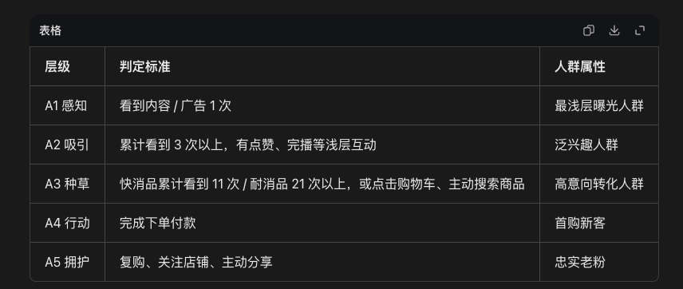
千川&自然流（直播间） 召回逻辑：优先召回A5A4，A3··
回流逻辑：A3人群越多，回流来的人群越多
付费和免费的唯一区别：你直播间 排名的 高和低
只要叫兴趣电商：触达人群的质量 和频次，都是考核你生意的重要指标之一
再次证实：千次 说的 是 人群质量 ECPM：说的是预估质量（预估是重点，通过历史行为数据 预估你的 数据，通过引入的人群转化概率有多大），所以两个都跟人群质量相关
追投有没有用？肯定有用，全域是基本工资，饿不死活不好！能追投 尽量追投
全域是AI，达到预期目标，会拿出有5%-10%预算去黑盒探索，任何投放平台都有，所以roi会震荡，
全域与自然流 协同 逻辑：
付费撬动自然流的逻辑 其实是回流：其实是付费的人群被打入直播间---有的人（短时间 高频次 深度行为）成为A3----退出直播间----自然流侧赛马能赢---一定会回流（一定）--自然流召回（召回模型）---推荐页（直播画面）----转化---计入赛马
叠投：短时间 小预算 多笔叠投，莱卡打底修正人群，判断模型没问题，直接智能放量计划！怎么判断模型有不有问题，看实时购买人群与 累计人群
【一键起量】其实就是直播加热的人气投放…… 它不需要你做定向，除此之外他俩一模一样。它玩的是什么？**以千川全域现在的模型为基础，做一圈扩散。人气啊，直播间直播加热的人气，是以你直播间现在的模型为基础，扩散一圈。****一键起量其实就是直播加热的人气投放**，它只不过叫智能，**它不需要你做定向**，除此之外他俩一模一样。
建模型/修正模型：灌人群资产或者私域人群，怼量，别磨叽
加热以你直播间当前模型为基础往外扩
这次查到第4份逐字稿，也要修正我上一条解释：不能简单分成“抖加沿旧模型扩散，直播加热就能换方向”。老师明确说，智能直播加热也会依照当前模型扩散。关键还包括定向方式，以及扩散依据的是哪个模型。
关联池塘：看过你直播、刷过你短视频、加购过你商品的人，都和你建立了"关联"，来了就更容易再被召回
你的池塘和任何同行的池塘都有交集，重叠部分就是公共可竞价流量——池塘越大，免费能召回的人越多px
平台流量池 分布：M1 M2 M3 关联
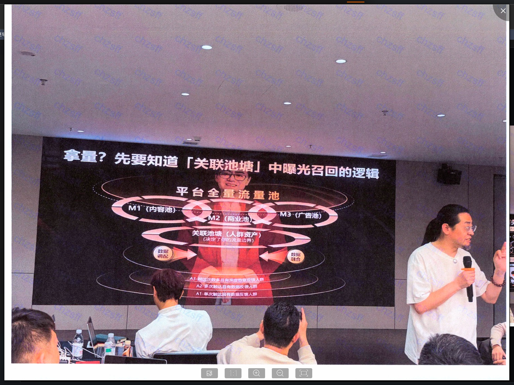
扩大关联流量池，就是触达更多有关联的人
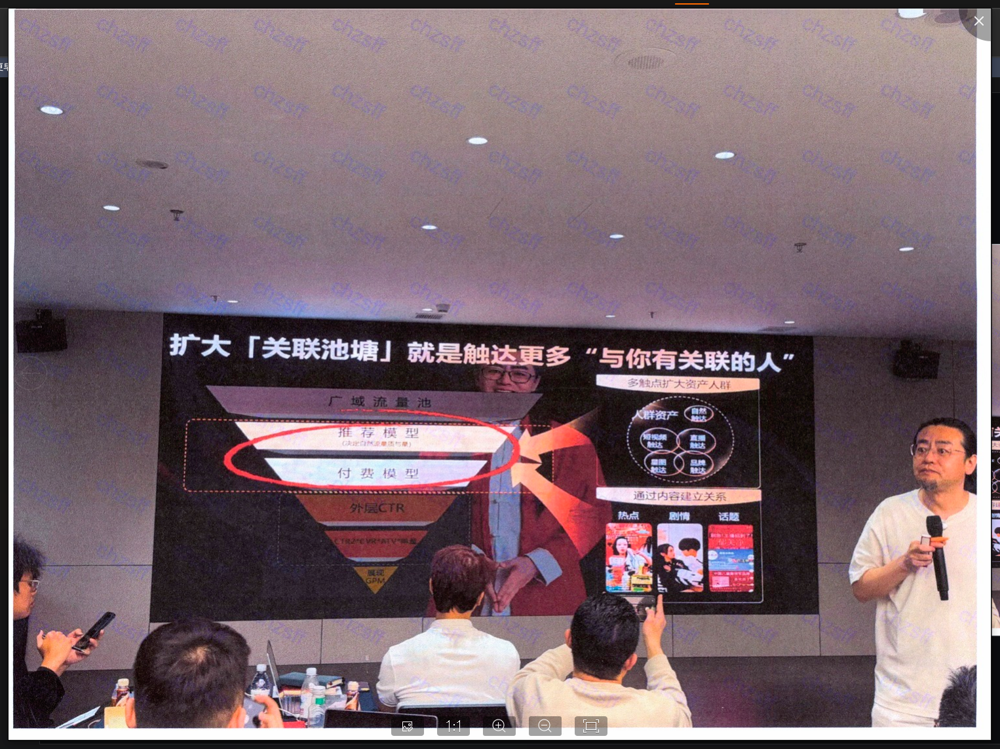
我们正在那开播呢，突然间遭遇【断崖式的下降】…… 为什么？因为我在这个人群方向下，我的整体数据完成完，完蛋了。
那这个时候，那就证明就是一个事，你只要【换个方向】，不同方向的竞争，我们是不是就还会有机会？
那换方向，**【挂一个全新的人群包】，直播加热人气，那是起量最快的了。把直播间持续在线从 50 人给我拉到 3000 人，给我扛 5 分钟，改没改过来？改了。花多少钱？500 块钱。** 如果你磨磨唧唧不改呢？越拖越实…… 然后就是哗啦掉下来了，越播越惨。
我们的核心动作是什么？**要给系统【传达正确的向量信号】，告诉系统我是谁。**"
RFM
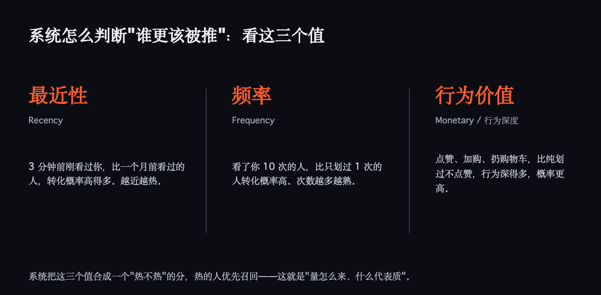
“你只要是想建模型和改模型，第一件事就是给我怼量。量不够，模型能出来吗？” 浅层（点击 互动 停留 ）、深层（转化）都可以建模，转化成粉丝，商品卡观看算不算转化？
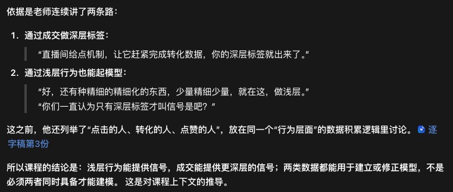
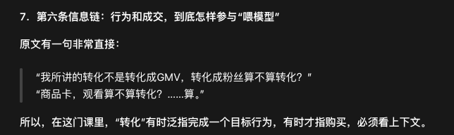
实质证据：
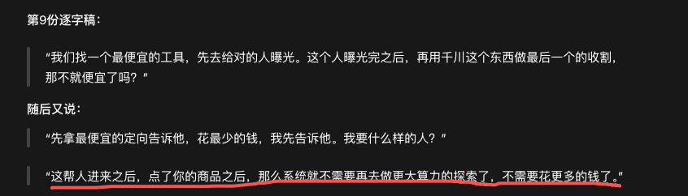
商品和内容表达 → 系统识别方向 → 与用户兴趣、行为信息匹配 → 确定可以尝试曝光的人群。
老师的原话是：
“把我们的短视频、直播和商品……做成向量……让系统更好的去了解我们。”
“这两个东西共同指向了匹配系统里面的曝光方向。”
px“曝光给你看。不管你点不点，你都是我的。”
随后又补了一个很关键的限制：有的品牌人群资产有一亿，但只有其中符合当前向量方向的部分能召回。

他明确说：
“远近里头并不光是 A1 到 A5……还有一个远近，时间的远近。”
还用“已经关注，但长期不看，所以现在也刷不到”作例子。
🧠推导：近，不只是身份近，还要看最近是否活跃、接触是否频繁、行为是否深入。不能机械写成“A5永远先于A3、老粉永远先于新人”。
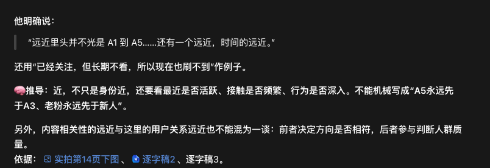
原文边界：老师也明确说过，未必每次都从最优质象限启动，可能从不同位置开始。 因此“由近至远”应理解为课程讲的优先原则，不能整理成每场必定执行的固定阶梯。
同一个人，是用自然流量还是广告触达

原文：
“远近里头并不光是 A1 到 A5，听明白了吗？A1 到 A5 其实描述的是远近关系，这没有错吧？还有一个远近，时间的远近。”
“这个远近是两层啊，再强调一个，一个远近是数据的远近关系，对吧？还有一个就是时间的远近关系……”
②“先私后公”——老师原话是：
“这个叫做先私后公，这个私现在有两个了，一个叫粉丝，还有一个叫什么？私域。”
不是必须把一层所有人跑完，才能进入下一层
不是粉丝必然上线、必然看到、必然成交
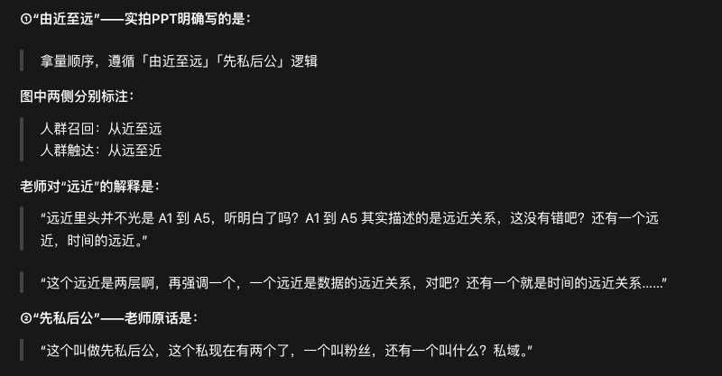
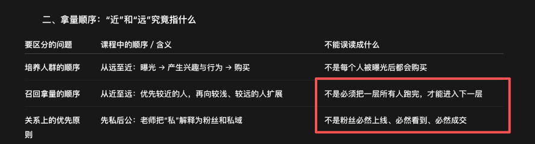
一键起量沿“千川全域当前模型”扩散，他认为这不会引发自然流；直播加热人气沿“直播间当前模型”扩散，他认为直播间已有自然流时，可以继续激发自然流。
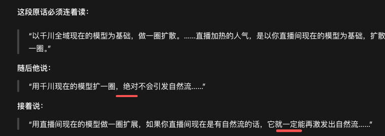
所有的调控都是建立在‘人群资产’与‘转化方案’……
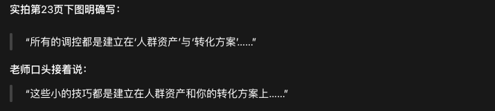
调控的底层逻辑：
1：预算越大，消耗越快，系统对成本的宽容度越大
优选控成本，放量几乎都会导致成本上涨
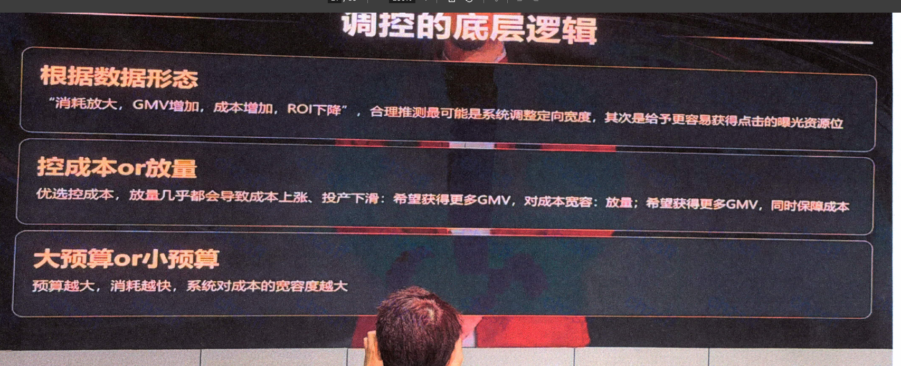
原文：
快消品吃A1，耐消品吃A2和A3
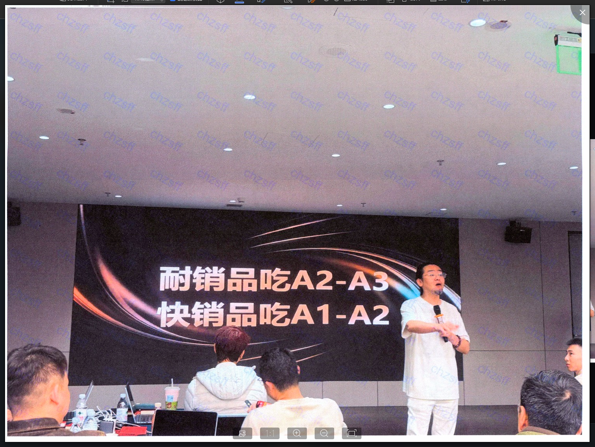
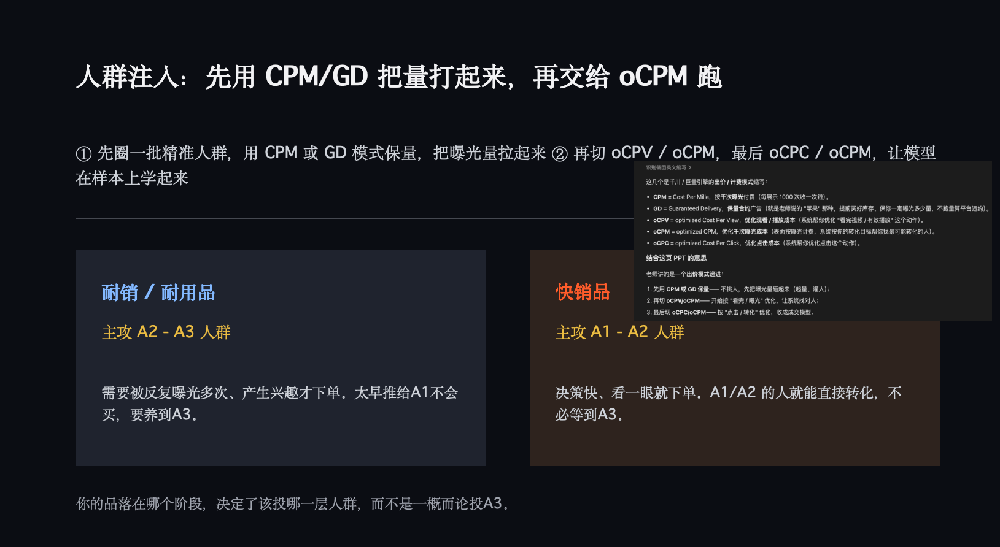
品牌广告的区别：
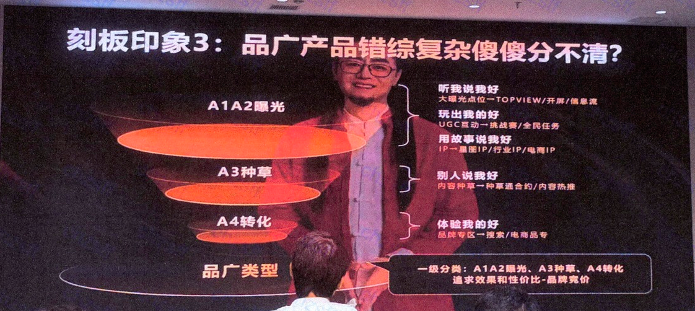
品牌广告 有独立流量池，重叠不大
老师拿 lift（增效）数据说：用了苹果，各方面数据都涨，涨的部分**不是从你原来的自然 / 竞价流量里切的，是 "召回" 了新人**—— 【可召回人数变多了】。
他还给了两个反直觉的数据：
- 自然流量的增效值 16，付费流量更高；
- 但 "看过 UV"：自然涨 16，付费只涨 6。
原因：付费是**挑转化概率高的人、花钱把排名抬上去**，所以来的人少但准；自然是**大量把人召回来看**，看的人多但未必买。
品广的价值不只是那 15% 的直接曝光，而是它像"点火"：被品广打过的人，回头在自然和竞价里也更容易看播、关注、下单——这才是它拉动大盘的原因。
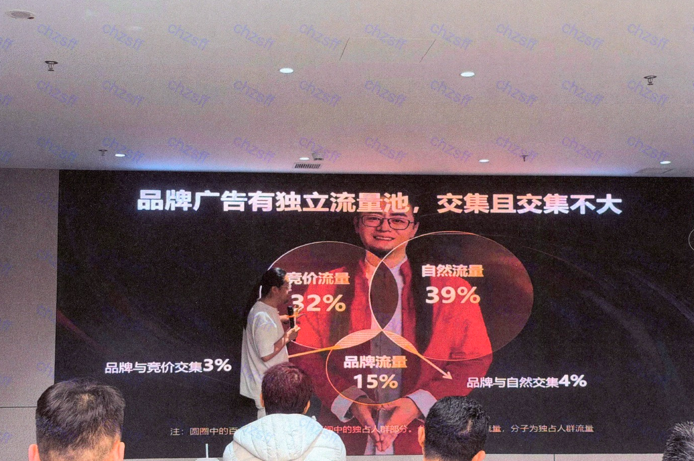
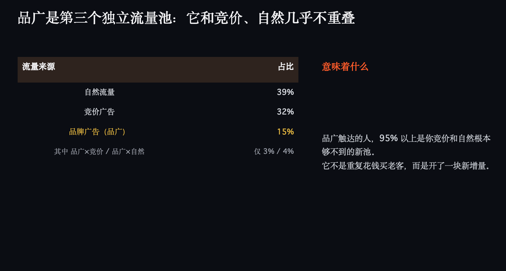
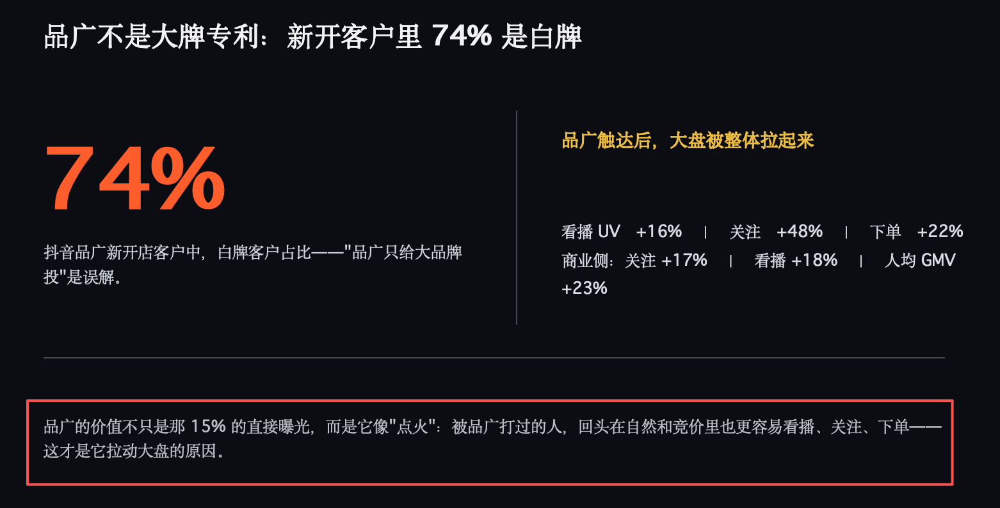
老师原话骂醒：你们天天琢磨怎么把包做精，方向就偏了。玩广告是研究怎么灌水、让系统 O（优化）帮你筛，不是自己做精准。


原文确实有，一字不差，在第 46 行：
" 千川你没记得我讲那个叫**分桶的逻辑**，对吧？我把你告诉我的人群，我放了几个测试组，每个都试一下了。**有正向回馈的我就接着增加曝光，没有正向回馈的我就要不曝光或减少曝光**，对吧？"
**"不曝光" 不是计划停了。**
你的计划一直在跑，但千川 O 在系统内部自动把那组没反应的人**不展示了**。第 47 行紧接着说：
"O 是会摆平的，**都是帮你把这些水分全部 P 掉**，然后你会发现你的价值就要掉了。"
意思就是：你灌进去的 20% 垃圾，千川试了一下发现不转化，自动就不给他们曝光了 ——**计划没死，只是水被 O 挤干了，剩下的还是你原来那 100 万精准人**。
-------------------------------------
2025 vs 2026 理念：准 vs 灌水 几十万小包 vs 灌水 随着引擎的不断算力提升，**它的 O 越来越准**。且今年 9 月份会有一次大版本改版…… 你们会发现抖音的推荐逻辑不一样。
原文
**把人群包做 "精" 有三大害处**
- 推不出去；
- 可预定的人太少，跑量慢；
- CPM 价格更贵。
正确做法：
- 别把包做窄做准，要往里掺 "水"（相似人群、大促敏感人群这种泛的）；
- 掺 20% 水，系统会智能把没用的剔掉，你人均包价反而降；
- 例子：120 万的包，掺 20 万 "垃圾"，再用相似人群换一下，价格还能再降；
- 千川自己有 "分桶" 逻辑：试几个组，有正向反馈就多曝光，没有就不曝光 ——**系统帮你筛，你负责把池子搞大**。
px加热怎么玩，小额，多笔，摘尖，看播，不要人气（不够会塞其他池塘流量，质量不对等）
300一小时，再建一条，为啥？连续看 1 小时你直播的人，不是看短剧就是看竞品，退款率高，不要；

直播加热是 T+0，你刚看完相关内容，我**实时**就能把你捞进直播间。！
正常投放是 T+1：抓的是 "昨天看过你品类的人"
直播加热”中的达人定向里的达人身上的标签也是（T+0实时）拓宽标签
T+0 工具现在只剩三个：直播加热、抖加、小店随心推px
**抱大腿（达人定向）**：
- 直播加热能实时定向 "谁在看行业榜一的直播间"；
- 你刚从榜一直播间出来，标签就变成了 "榜一的粉丝"，我马上把你捞进我的直播间；
- 捞得多了，**我的实时模型就被喂成了 "行业榜一的模型"**。
- 老师金句："**抱英雄菊花的时候，你就变成了英雄。**"
- 实操：把行业榜前 100 名全圈上，谁去看他们就捞谁。
加热什么时候投、投多少

1. **开门钥匙**：冷启动、流量池打不开的时候，想尽办法把钥匙拿到；
第一个点直播间的冷手机必投，听明白了吗？数据拉的越高，回流的流量就越多。
2. **GPM 高的时候**：官方说 "高光时刻赶紧让人看"，老师说其实是 "你流量获取能力在变弱了，必须补"；
第二点，当你的GPM高的时候，你必须要投票。为什么你们一直认为高GPM能给你们带来流量，对吧？是高GPM是给你们带来高GPM的精准流量，这块我不否认，但是越精准的流量人数是会越少。 所以在投放侧，如果你们想拿大流量的时候，你的GPM不应该是高的，反倒应该是低的，但是不能太低
3. **救命点**：计划要夭折的时候救一把。
第三个投放救命的，必须要往直播间现在断崖式的下降
**投多少**：
- 初级算法：千川深转烧了多少 CPM，加热就补多少 —— 好比鱼塘里捞了 100 条鱼，得放回 100 条鱼苗，不然坐吃山空；
- 老师建议直接 **3 倍硬灌**，因为你不知道灌进来的有多少会转化，得算损耗。
## 人群种草（性价比替代方案）
- 瞄准 **A3**（可转化概率最高的人）；
- 可以投**不挂车的视频**，理论上能当个大号养；
- 链路：用户刷到你原生视频 → 开着呼吸灯 → 点进来进直播间；
- 今年官方猛推 "短引流"（短视频引流直播间），希望素材做软不做硬；
- 价格是加热的 1/3，引流效率也是加热的 1/3，但**算下来性价比反而更合**，还有官方流量扶持。
直播加热目标：
有效看播和人气
投放的根本目的
投放不是为了直接成交，而是“广而告之”，通过付费广告触达潜在用户，将其纳入人群资产池，以便后续通过自然流量或再次付费进行召回转化。
自然流量的真相
抖音不存在纯粹的自然流量。所谓的“自然流”实为用户曾通过短视频或广告被触达后，系统基于历史行为进行的召回。
付费撬动免费的核心规则
用户第一次通过付费广告进入直播间，第二次再进入即被视为自然流量。因此，付费投放的首要目标是扩大触达人群基数，建立可召回的人群资产。
再次强调：
冷启动期的矛盾
直播开播前15分钟最需数据支持，但千川往往不跑量，此时不应依赖素材计划，而应直投直播间快速起量。
利用时间窗口砸盘
如月饼在销售末期（9月25日左右）以9.9元两盒清仓，可重创同行，同时用此流量带动高客单价水果礼盒的销售。
预估（预）的真正含义 03:39
“预”指基于历史数据对未来表现的推断，是AI系统判断账户价值的基础。
预估点击率与转化率的意义
点击率代表人群对该内容的兴趣程度。
转化率反映用户对产品或话术的认可度。
预估的前置性特征
当前投放效果下滑的根本原因往往源于前期数据表现不佳，而非当前操作问题。
低价出价的后果
降低出价会导致系统分配质量更低的流量，进而拉低预估点击率与转化率，最终导致跑量失败。
高价出价的影响
提高出价可抢占高质量流量，提升系统优先级，获得更多曝光机会。
莱卡在投放体系中的地位 05:14
莱卡是日常投放的中流砥柱，主力ROI产出多来源于此。
无论采用何种策略（如通投、直播加热），必须保留莱卡计划作为基础。
成功关键：通过兴趣和行为精准形容“卖点场景人群”，若无法做到则不适合直播电商。
标签时效性与数据更新机制 33:22
巨量千川标签为T+1，即当天投放基于昨天产生数据的人群。
巨量云图标签为T+1至T+30，数据回传慢。
抖加/小店随心推为实时标签（T+0），能即时捕捉用户行为。
策略启示：莱卡行为词无需频繁更换，因为人群每日自动流动更新；仅在大型热点事件时需临时添加或删除关键词。
达人定向--扩标签
0粉起号
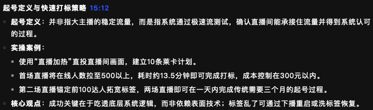
官方建议 A4人群扩展 种子人群是 200w
1：玩包量：是1：10的配比，100个cpm 10w曝光，就要至少100w的人群包
2：直播加热：十几万，二十几万，三十几万的人群包照样可以跑
看原文：
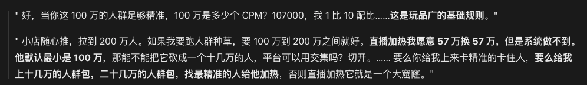
自然也受人群资产影响
人群资产像池塘：自然和付费都是从中取水的方式；讲师认为付费取水更快。
只取不补：越能转化，现有人群可能消耗得越快；不增加来源，最终付费、自然、GMV一起震荡下行。
存钱比喻：每月赚3万元、花6.8万元，早晚见底；如果不想把生意缩小，【就要提高新增来源】，而不只是压缩消耗。
付费不走赛马逻辑，走竞价逻辑
付费流量压制 免费流量基础：付费人群与自然人群交集这个部分一定是个最优质的人群，最优质人群付费不走赛马，他总出价格，快速在这里去拿量。而免费想在这里去拿量，他是给赛马，这时候速度就慢了，当付费把共同交集的优质人群拿走之后，剩的是不是就是泛人群了。 这个时候你会发现自然流是不是就难转化？难转化自然流就会掉

全域深转智能 （托管）就很容易 抛出很小值的 psi，特征趋同！
再次证明：自然也在跑人群资产和付费一样是 召回逻辑
其次，当人群资产没了，付费就算停了，自然也不会好
记住了达人的唯一打法就是拼了命的破圈，找到没看过你的人，然后想办法转化为。懂了吗？举个例子，如果能看到一些达人PSI的话，你觉得这个PSI最高数值是100吗？
理想分工：有稳定渠道每天提供全新且相关的人群，直播间团队便能把更多精力放在主播、商品和转化上。
批判“自然流”迷信，指出付费流量是获取精准触达和回流的基础，自然流本质是付费触达后的回流。
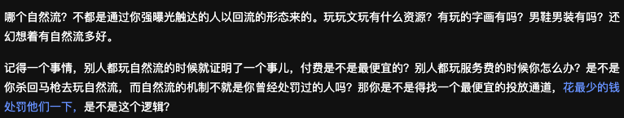
人群包核心指标：点击率（CTR）是检验人群包质量的最高标准。若DMP计划点击率低于常规千川计划，说明人群或通道有问题，无需看转化率。
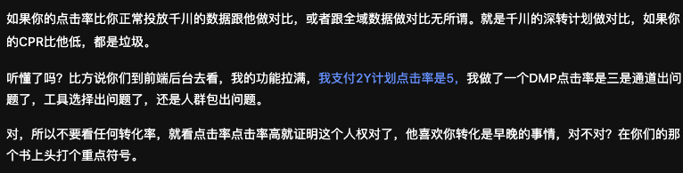
他喜欢你转化是早晚的事情，
人群资产放在你的数据平台上了，你们除了看着爽之外毛用没有，对吧？
1：把它激活。激活分两种，一种是重新去触达
2：第二种是一定得促进它流传起来，两者不要去取谁，是同时完成，既激活又得让他流转OK！这种策略一般怎么办？
人群包
1：加购里包不包含已经购买的，包含对吧
目前来看直播加热是在直播期间最便宜的通道，人群种草是在非开播期间最便宜的通道，对吧？
新客=云图极速版直播行业活跃人群
还有一种叫做新客，精准拿新客云图极速版直播行业活跃人群。我圈选的是什么？点击行业里头点击过的。是不是行业spu a三人群？请注意我用的是spu a3，我没说A3，因为A3在我眼睛里头就是一坨屎，因为它有大量的数据噪音。比方我上午讲的主播引导算不算OK。 好，那么这个时候我们就可以把这个人群进行处理了。你会发现当我把行业这个人去拿上去的时候，他就相当于是我在菜园子里面摘出来的菜。 好，第二步我是不是得进行数据清洗？上午已经跟你说了，我用了一个简单的一个【小垂类的行为】，那么把它有简单的清理洗出来。 菜洗出来之后，下一步要干嘛？刻字儿，菜洗出来就烹饪了，切得切，切成适合我这次动作的大小，对吧？ 那我就把人群猫再次进行要命的这种处理，对吧？把它切出来，切出来之后就是你们最关心的问题了。
短视频 无法撬动 自然流的 真相：
短视频：破圈利器，【不走召回逻辑】，适合种草和激发兴趣。建议多场景、多内容形式分发，避免同质化
多触点布局与破圈策略
四大场域：
直播推荐：考核实时互动和即时转化，适合承接流量。直播推荐你们最关心的自然流量，他考核的是实时互动和即时转化。实时互动跟不上，转化率跟不上，别他妈想破圈认可吗？甚至连你自己的固有人群拿着都费劲，这没有错
短视频：破圈利器，不走召回逻辑，适合种草和激发兴趣。建议多场景、多内容形式分发，避免同质化。
搜索：高精准流量拦截，转化效能高于短视频。配合“小蓝词”引导搜索，提升转化效率。
商城：抖音内的淘宝，适合复购和货架电商逻辑。
组合策略：
短视频种草 + 搜索拦截 + 直播间转化。
矩阵账号放大短视频，通过向量关联引流至直播间。
信息流追投高光切片，提升数据回传率。
案例验证：通过多通道组合（千川、品牌广告、AD等），在618期间实现快速排名上升和高GMV产出，证明多渠道布局优于单一依赖千川。
品牌合约的应用优势 56:57
特点：【包量逻辑，不走ECPM竞价，能快速起量。】
适用场景：Face Live（直播画面）是唯一官方认可能直接拉动自然流量的投放产品。适合高ROI计划因竞价限制无法跑量时，迁移至品牌广告以突破瓶颈。
成本优势：相比竞价广告的高CPM，品牌广告可通过返点和固定成本降低获客成本。
全域推广原理与流量对冲策略 35:28
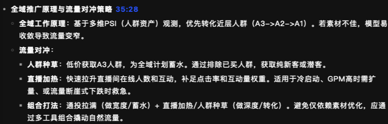
全域工作原理：基于多维PSI（人群资产）观测，优先转化近层人群（A3->A2->A1）。若素材不佳，模型易收敛导致流量变窄。
流量对冲：
人群种草：低价获取A3人群，为全域计划蓄水。通过排除已买人群，获取纯新客或潜客。
直播加热：快速拉升直播间在线人数和互动，补足点击率和互动量权重。适用于冷启动、GPM高时需扩量、或流量断崖式下跌时救急。
组合打法：通投拉满（做宽度/蓄水）+ 直播加热/人群种草（做深度/转化）。避免仅依赖素材优化，应通过多工具组合撬动自然流量。
人群包
所以记着一个事情，你们看到15天，你们认为精准了，那是对你的钱不负责任。
15天对我来讲是我不能容忍，就割韭才能快播，我受不了，这只要一跑肯定亏钱
听明白了，菜要吃新鲜的，我在广东待的肉冻过我都不吃，每一项的我都没说。我是不是得要最新鲜的数据，是不是才能拿到最好的结果？
全域玩的好，有两个地方的【增量】
1：第一块品新品牌广告和星图广告，它能把你的人群池塘里的快速的注水，对吧？
2：还有一块，你的模型标签随着变宽，你能容纳的人是否就会更多？比方说我们这两天谈论的达人相似的方法是不是就是这个基础理论之上出来对OK。
全域工作原理（由近致远）：A5-A4-A3-A2-A1（时间 频次 行为深度）,素材极好可能破圈，不好就会跑不动，收敛！
自然流逻辑（由近致远）：赛马赢得曝光次数，推 A3-A2-A1（时间 频次 行为深度），除非你进了带货榜，否则会有新流量吗OK除非系统在扶持你，对吧？
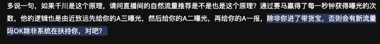
所以清仓的时候不是降价的逻辑，你们是在同人群下清仓才会降价，我他妈是跨人群，我凭什么降价
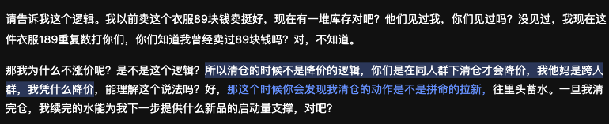
【标签留下，其实成为了人群资产】
我和雨川老师直播也不转化，为什么把实时在线拉这么高？告诉我第一个大量的精准流量进来了，我触达了你们，你们把标签给了我，天天把标签给了你们，这没毛病。然后你们是不是我的人均资产了，只要我发啥，你们是不是都能看到了。同时宇川老师跟我同框的时候，我俩的向量是不匹配了。 好了，我不开播，于川老师开播，你们有没有机会新人能看到他了？逻辑简单不简单？这是我们的生意逻辑，跟你们的商业逻辑不太相同。没事。
想要全域跑的好（不需要优化素材），拼命的给全域里面蓄水---而且你们都知道全域里头跑的最好的一定是直投直播间
想让全域跑的好，现在知道怎么跑了。人群种草挂高精准度的人群包，拼命的给全域里面蓄水，且续进去的人全域能转化。 你的全域是不是就跑了？需要优化素材吗？ 不需要，听明白了吗？而且你们都知道全域里头跑的最好的一定是直投直播间，这话没有错吧？ 那你们对于素材的压力就会变得很轻很轻OK好，那怎么玩？
人群包
这个产品人群包质量越高，CPM价格越高，跟所有的千川一样。你说我通投一个行业，人群点击率高的话，你可能跑7块到10块。
直播加热理论上跑的是小店随心推和抖家的交集度这么大，这个吃的内容好不好？我觉得挺好
直播推荐你们最关心的自然流量，他考核的是实时互动和即时转化。实时互动跟不上，转化率跟不上，别他妈想破圈认可吗？甚至连你自己的固有人群拿着都费劲，这没有错
人群种草：低价获取A3人群，为全域计划蓄水。通过排除已买人群，获取纯新客或潜客。
直播加热：快速拉升直播间在线人数和互动，补足点击率和互动量权重。
品牌广告（苹果）的应用优势 56:57
特点：包量逻辑，不走ECPM竞价，能快速起量。
适用场景：Face Live（直播画面）是唯一官方认可能直接拉动自然流量的投放产品。适合高ROI计划因竞价限制无法跑量时，迁移至品牌广告以突破瓶颈。
成本优势：相比竞价广告的高CPM，品牌广告可通过返点和固定成本降低获客成本。
起号时建 10 条莱卡计划，复制出 9 个一起跑，直播间第一场开播实时在线拉过 500
莱卡走竞价，预估点击率不行就跑不出去 —— 所以素材 / 内容得接得住
> 川的工作原理叫**优中取优**。你怼满了 350 个词，面上是堆满了，他给你都跑吗？没有，**最终可能跑的也就那么几个词**，但是是哪个词你有必要知道吗？"
上下文就是讲莱卡填 350 个词 —— 系统自动挑几个最准的跑，你不用知道是哪几个
> 测试**消耗和转化**来判定这个计划好不好。"
**逻辑是这样**：
1. 先看**消耗**—— 钱花不花得出去？花不出去 = 计划废，别硬撑
2. 再看**CTR**—— 花钱了，点击率高不高？CTR 高于你正常千川计划 = 人群准
3. 最后看**转化 / ROI**——CTR 高了有没有人买？
破圈三种：**跨兴趣、跨内容、跨场景**。破圈就是搞增量。
因为**行为和兴趣是交集**（原文第 80-82 行）：

" 他所有的兴趣和行为条件当中，谁最容易出 GMV？**交集人群**。交集探索完跑行为人群，行为跑完跑兴趣人群。
1. 系统先跑 **行为∩兴趣**（最精准，ROI 最高）
2. 这批人跑完了 → 跑**纯行为**（ROI 开始降）
3. 纯行为跑完了 → 跑**纯兴趣**（ROI 惨不忍睹）
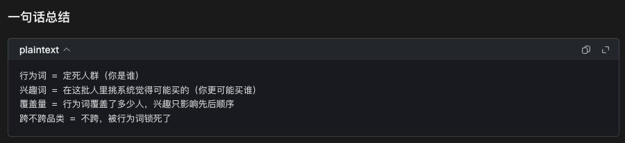
> 控制人群包的数量，配置在多少？**三个以内**。如果是加热，**【三个以内几十万就能跑】**。那我们就可以**多条计划挂多个几十万，多个狭小的精准，拼凑了一个干饭的精准**。这种投法**切忌大而不全，你做的人群越宽死得越惨**。"
---
## 这句话什么意思
**不是说你最多跑 3 个计划**。是说：
### 1. 一个计划里，人群包不超过 3 个
你在一个计划里，行为 + 兴趣组合出来的人群，不要塞太多。**3 个以内刚好**。
### 2. 加热场景下，每个包几十万覆盖就够
不要搞几千万的大宽包。加热跑的是小而准，每个包几十万覆盖，3 个拼起来就是一百多万。
### 3. 多个小精准拼起来 = 一个大精准
不是搞一个超大宽包，而是搞**几个窄而准的小包，拼在一起**。每个包都精准，加起来覆盖也够。
### 4. 最怕大而全
原文原话：**"你做的人群越宽死得越惨"**。
**结论**：别拿品广 30 块 CPM 跟直播加热 100 块 CPM 比，那是两个产品两个池子。**直播加热挂包就是 100 块左右 CPM，通投才 7-10 块但老师说别投**。
乘方vs全域
全域排序：ECPM
乘方排序：ECPM + 自然系数 + 质量系数（退货率/店铺评分）
乘方继承全域计划，操作一样
乘方标题拉满，AIGC裂变靠素材和标题
投流课程 · 树状图 2.0
经验3
黑猫
1平台推理逻辑：打分机器打分的4大核心
1：进入率（12-28%）
自然流：低于12限流，很小，层级破不上，去高于28变泛
付费：低于12正常
自然流：低于12限流，很小，层级破不上，去高于28变泛
付费：低于12正常
2：停留 新粉3s停留，平均停留时长
3：互动 点赞 评论 关注 加团 点击小黄车 灯牌
4：转化 最重要，转化率，GPM
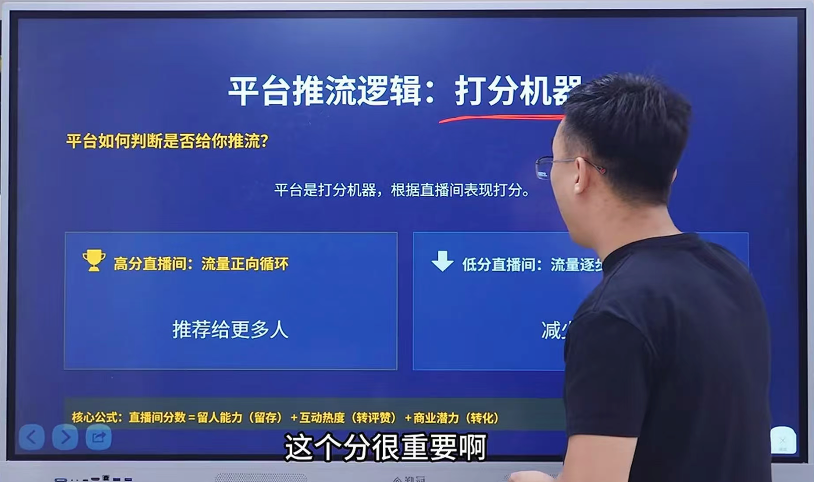
核心公式（破层级公式）：综合评分=有效场观 x 3秒停留率 x新粉成交率
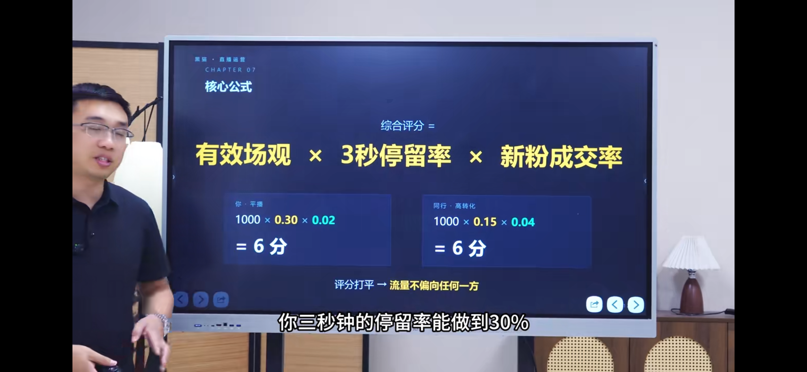
分越高，流量越多px
2权重体系数据做好了，也有可能不给流量，
1：账号 平台对账号的信任
2：直播间 每一场的表现
3：链接 高销量自带权重
4：店铺权重
4个的综合权重，缺一不可px
3破层级
破在线层级
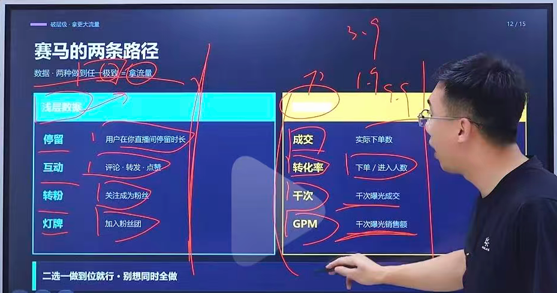
正常直播间的 放单及格线是10% 30个人3单，保层级不掉，如果5-6单远超，破层级
0-30人 打标签 没标签没数据，不到30人就是 标签不准 不要用福利品硬拉
30-130 浅层和深层 二选一 都会有流量
130-260 转策略 尽量做浅层 一个订单返流5个，很有限，成交没有力量了！浅层源源不断，保证 【新粉的 3s停留率 平均停留时长】 下钩子：大钩子-小钩子-成交！
场观层级递增：GMV GPM 场观 开播时长 平均停留时长（第一场--第三场 ＞30s 第4场-第7场＞45s）
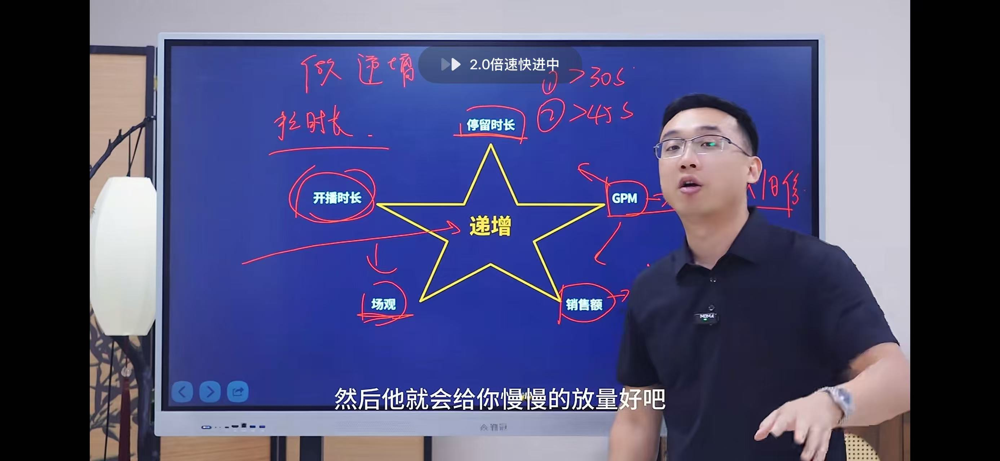
注意：停留率 是没有可视化数据的
4只看5个数据
曝光 进入率 3s停留率 互动 成交
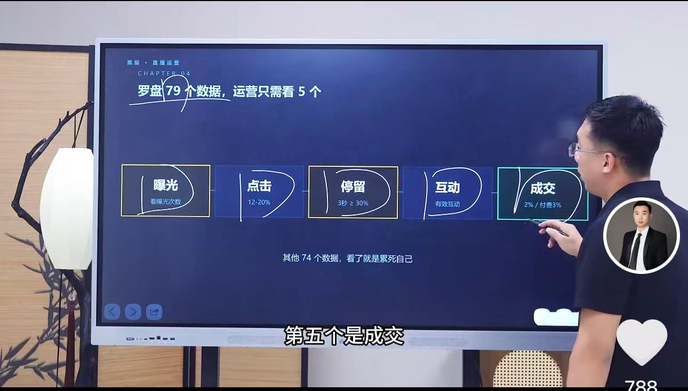
自然流 转化率2%及格，开全域 3%及格